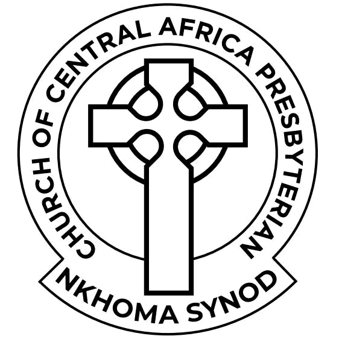

Loading...
Helping Our Church Reach People Anytime, Anywhere
We are building digital platforms that carry God's Word further — preserving and sharing recorded sermons, teachings, and special services so that the message of Christ reaches beyond Sunday.
Based in Mzuzu, Malawi, the Nkhoma Synod of the CCAP (Church of Central Africa Presbyterian) is committed to spreading the Gospel of Jesus Christ through faithful preaching, teaching, and community service — now extended through digital tools to reach more souls for God's kingdom.
To proclaim the Gospel of Jesus Christ to all people, nurturing believers through sound biblical teaching, fellowship, and compassionate service in the power of the Holy Spirit.
A spiritually mature and growing church where every member is equipped to share Christ's love — in Mzuzu, across Malawi, and to the ends of the earth.
We are dedicated to preserving God's Word through recorded ministry, making sermons and teachings available 24/7 so that no one misses the life-changing message of the Gospel.
As a vibrant CCAP congregation, we offer a range of ministries to nurture faith and serve our community.
“Helping preserve and share God's Word beyond Sunday.”
Our sermon video library makes it easy to access recorded sermons, Bible teachings, and special services from Mzuzu CCAP Nkhoma Synod — anytime, anywhere.
Whether you missed a Sunday or want to revisit a powerful message, our organized library puts God's Word at your fingertips.
Initiatives and ministries we are carrying out for the glory of God and the good of our community.
A growing collection of recorded sermons and teachings from our pastors, available online for all members and visitors.
Ongoing initiatives supporting education, health, and spiritual growth in the Mzuzu community and surrounding areas.
Programs designed to nurture faith, build community, and empower the next generation of Christian leaders.
We would love to hear from you. Reach out for prayer, inquiries, or to learn more about our ministries.
Mzuzu, Malawi
Digital solutions by Next Level Advanced Digital Administration